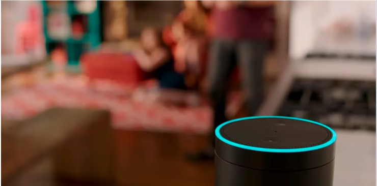

El nen tenia una conversa amb l'assistent virtual Alexa i va acabar afegint al carret de comprar 45 walkie-talkies de Spiderman i 112 tobogans d'aigua entre altres coses.
Els assistents virtuals que funcionen amb comandaments de veu són cada vegada més habituals a les llars d'arreu del món. Tot i l'ajuda que poden prestar, tamé arriben a ser protegonistes de situacions molt còmiques, sobretot si es deixen en mans d'un infant. L'últim cas viral és el d'un pare que va descobrir que el seu fill de 5 anys estava a punt de gastar-se 1.000 euros en una llista de joguines molt variades mentre conversava amb l'Alexa, l'assistent virtual d'Amazon.
En un diàleg de més de dues hores el nen va arrivar a demana-li 112 tobogans d'aigua, 45 walkie-talkies de Spiderman, un jacuzzi de més de 450 euros i, fins i tot, un coet. El nen jugava amb l'assistent virtual probablement sense saber que tota la seva luxosa comanda estava sent enregistrada.
